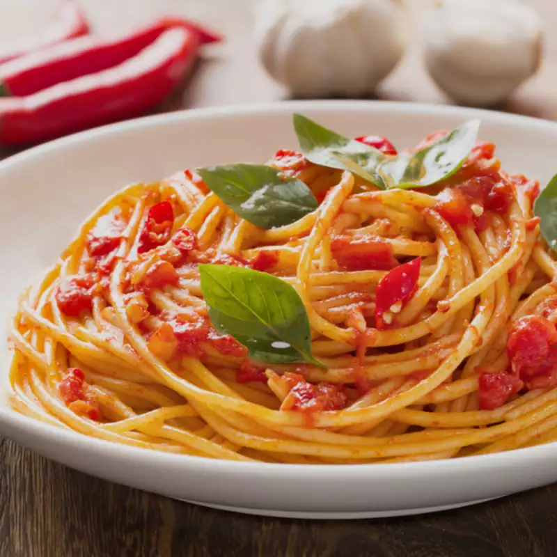

Spaghetti with tomato sauce

Description
The spaghetti with tomato sauce is one of the most iconic Italian dishes, despite its simplicity: pasta, tomato and basil.
Ingredients:
- Spaghetti 320g
- Peeled tomatoes 800g
- Extra virgin olive oil 30g
- Basil to taste
- Fine salt
- Garlic 1 clove
Steps
The steps are few and easy to follow!
- Pour the oil on a pan with the peeled 0and halved garlic clove
- Cook for 2 minutes
- Add the peeled tomatoes and salt
- In the mean time, cook the pasta in plenty of boiling salted water
- Once the pasta its cooked, add it to the tomatoes
- Your spaghetti with tomato sauce is ready. All you have to do is serve it, garnished with fresh basil to taste!
Go back